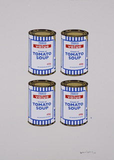
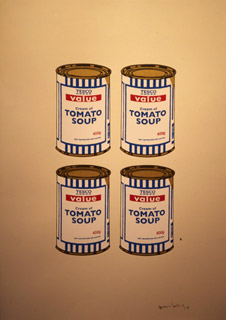

Banksy
From The Giant: The Definitive Obey Giant Site
From Supply and Demand, pg. 42:
I found the Obey Giant campaign repetitive and nauseating. l thought it wasn't really what you could call "art," because it didn't change much and it was so overbearing on its surroundings. For some reason, that fucking face always seems to jump out at you even from the smallest little sticker. But if you listen to house music for a straight 10 hours on drugs, the smallest little change becomes very significant. And after a while, you don't ever want that music to change. Somehow, I got sucked into the wrestler's fat little face and now l don't want it to do anything else at all.
If Shepard Fairey comes to your town, every single graffiti writer gets uptight. We don't like Shepard because he makes us feel scared and lazy. I am absolutely positive he has made more reaches than any graffiti writer in history ever has done or ever will. And that means he's won. Anyway, I once got to go gambling with his wife and she's very lucky.
- BANKSY
[edit] Banksy Wah?
In the past few months there have been some rumors about how Shepard disrespected Banksy and pasted over his piece in Los Angeles. We thought people would get that something was worked out between the two artist since Banksy is very well respected in our camp, the fact that Banksy and Shepard are friends, and that Banksy was featured in SWINDLE in which Shepard interviewed Banksy personally…. But I guess some people could not put two and two together… Here is Shepard's short but sweet response:
The Banksy accusation is retarded. Banksy is a good friend. On the reverse side of that building was a huge 25×15 foot piece of mine. My friend owns that building and we put up the smaller Banksy image on the other side for him. When Banksy’s LA show was coming up, I traded my larger wall for his smaller wall to give him a better spot. Do you really think I would go over Banksy in a malicious way. He got the best end of that deal.
-Shepard
|  |  |
{kind=link}
{kind=link}
| This article on Banksy is a stub. Please help us by expanding it! |